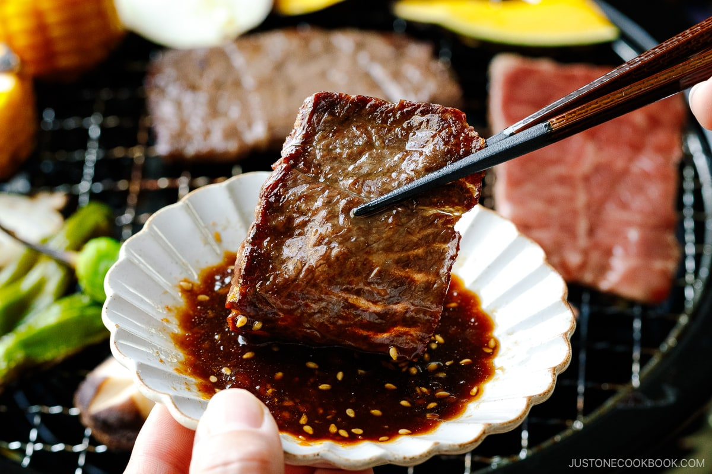

Home
Breakfast
Lunch
Dinner
Breakfast
Miso soup with tofu, rice, and pickled veggies
Lunch
Tofu & vegetable stir-fry with sesame sauce and soba noodles
Dinner
Yakiniku-style grilled beef (lean cut) with grilled peppers and cabbage, rice optional
